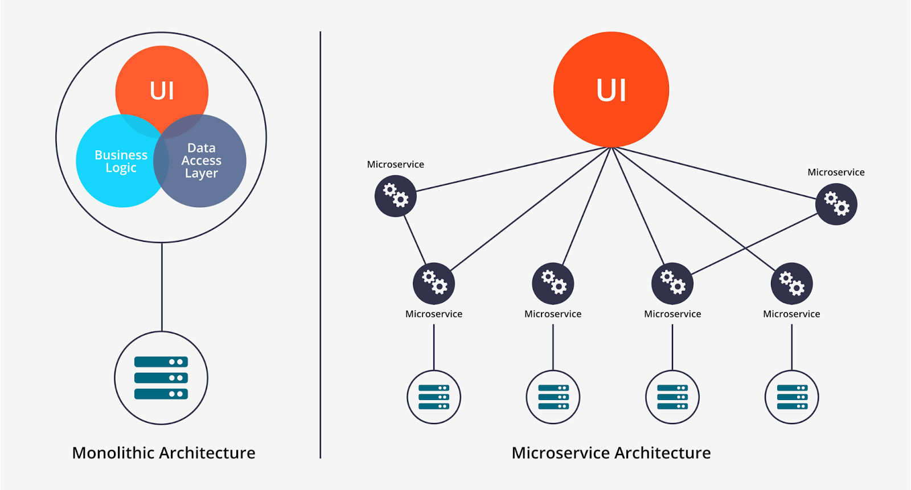

很多人并不了解软件架构和软件设计之间的区别。即使对于开发人员来说，对两者的界限也很模糊，他们可能还会把架构模式和设计模式中的内容搞混。作为一名开发人员，我想简述一下这些概念并解释软件设计和软件架构之间的区别。另外，我还会证明为什么软件架构和软件设计对我们来说很重要。
软件架构的定义
简单来说，软件架构是将软件特性（如灵活性、可伸缩性、可行性和安全性）转换为满足技术和业务期望的结构化解决方案的过程。这个定义使我们开始去思考可能会影响软件架构设计的各种特性。除了技术需求外，还有其他方面会影响软件架构（如商业需求或运营需求）。
软件架构的特点
如上所述，软件特性描述了软件在操作和技术层面上的需求和期望。所以，当老板说我们正在一个快速变化的市场当中竞争，企业需要迅速调整现有的商业模式，这时如果企业的业务需求很紧急，要求在短时间内完成的话，这个软件就应该有「可扩展、模块化和可维护」的特性。作为软件架构师，我们应该将性能（performance）、低容错性（low fault tolerance）、扩展性（scalability）和可用性（reliability）作为我们软件的关键特性。在定义了上边的几个特性后，老板告诉你我们当前预算有限，此时又要将另一个特性考虑进来，也就是「可行性」。
这个维基百科中列出了全部的软件特性：https://en.wikipedia.org/wiki/List_of_system_quality_attributes
软件架构模式
很多人之前可能听说过「微服务」。微服务是众多软件架构模式之一，其他的架构模式还有分层模式（Layered）、事件驱动模式（Event-Driven）、无服务模式（Serverless）等。我会在后后面介绍几个常见的架构模式。微服务模式在被亚马逊和 Netflix 采纳后收获了很大的影响力。现在，让我们更深入地研究架构模式。
这里提醒一句，不要把设计模式（如工厂模式或适配器模式）与架构模式搞混，我们在稍后讨论设计模式。
无服务架构
无服务架构指的是依赖第三方服务来管理服务器和后端复杂基础设施的应用解决方案。无服务架构可以分为两类：第一类是「后端即服务（BaaS）」，另一类是「函数即服务（FaaS）」。
无服务架构帮助我们节省了大量服务器部署和例行维护任务所花费的时间。最著名的无服务 API 提供商是亚马逊的 AWS Lambda。
事件驱动架构
事件驱动架构依赖事件生产者（ Event Producers）和事件消费者（Event Consumers）。它的主要思想是将系统各个模块进行解耦，当有某个模块中的一个事件发生后，对这个事件感兴趣的其他模块会被触发。听起来很复杂？我们来举个简单的例子：假如你设计了一个在线购物系统，它包含两个模块：订单模块和供应商模块。如果客户产生了购买行为，订单模块会生成一个 ORDER_PENDING 事件。由于供应商模块对 ORDER_PENDING 事件感兴趣，所以它会监听这个事件，用以触发后续的行为。一旦供应商模块收到这个事件，它会执行一些任务或者触发其他后续事件（比如从某个供货商处订购更多的商品、通知仓库发货等）。
需要记住的是，事件生产者并不知道有哪些事件消费者在监听哪些事件。
微服务架构
微服务架构已成为近几年最受欢迎的架构。它依赖于开发小而独立的模块化服务，其中每个服务都可以解决特定的问题或执行独特的任务，这些模块通过定义明确的 API 互相通信来实现业务目标。对于微服务架构无需介绍太多，来看看下边这张图：

软件设计
软件架构负责软件框架和基础设施的选型，软件设计负责代码级别的设计，例如每个模块的作用、类的范围和函数用途等。
作为一名开发人员，了解 SOLID 原则和如何通过设计模式来解决常规问题是非常重要的。
SOLID 指的是单一职责原则（Single Responsibility）、开闭原则（Open Closed）、里式替换原则（Liskov substitution）、接口隔离原则（Interface Segregation）和依赖反转原则（Dependency Inversion）。
- 单一职责原则意味着每个类只有一个单一的目的和责任。
- 开闭原则：一个类应该对扩展开放、对修改关闭。详细表述一下就是，添加一个新的功能应该是，在已有代码基础上扩展代码（新增模块、类、方法等），而非修改已有代码（修改模块、类、方法等）。
- 里式替换原则：这个原则指导开发人员任何情况下使用继承都不要破坏应用逻辑。举个例子，如果子类
XyClass继承自AbClass，那么XyClass不可以改变父类已实现功能的行为。因此你可以放心地使用XyClass对象而不是AbClass对象，而不用担心破坏应用的逻辑。 - 接口隔离原则：简单来说，因为一个类可以实现多个接口，所以应该合理的组织代码，使一个类无需被迫实现与其目的无关的方法。因此，要把接口分好类。
- 依赖反转原则：如果你遵循 TDD（测试驱动开发Test-Driven Development）的方式进行应用开发，那么你就会知道将代码解耦对于可测试性和模块化是多么重要。举个例子，如果
Order类依赖于User类，那么User对象应该在Order类之外进行实例化。
设计模式
工厂模式
工厂模式是 OOP 世界中最常用的设计模式，因为通过这个模式，我们在创建对象时不会对客户端暴露创建逻辑，并且是通过使用一个共同的接口来指向新创建的对象。来看个例子：
我们现在有一个接口和三个实现了这个接口的类：
1 | public class Rectangle implements Shape { |
假如你现在要实例化一个方形 Shape，有两种方式可以实现：
第一种：
1 | Shape shape = new Square(); |
第二种：
1 | Shape shape = ShapeFactory.getShape("SQUARE"); |
1 | public class ShapeFactory { |
我更喜欢第二种方式，有三点原因。首先一个调用者想创建一个对象，只要知道其名称就可以了。其次扩展性高，如果想增加一个新的形状，只要扩展 ShapeFactory 工厂类就可以。最后屏蔽了具体的实现，调用者只用关心 Shape 接口，即使需要传额外参数来进行实例化，调用者也无需去关心。
适配器模式
适配器模式是结构设计模式之一。根据这个名字可以判断出，我们可以期望它把类的意外用法转为我们所预期的用法。
假如我们的应用要调用了百度的 API，需要在发起请求前需要调用 getBaiduToken() 获取 token。我们在 20 多个不同的地方调用了这个函数。之后百度在发布的新版本中把这个函数改名为了 getAccessToken()。
现在我们必须在应用代码的所有位置找到并替换这个函数名，或者可以创建一个适配器类：
1 | public class BaiduAdapter { |
应用中的调用改为：
1 | token = BaiduAdapter.getToken(); |
这种情况下，即使百度修改了函数名，我们也只需修改一行代码，应用程序的其余部分将保持正常工作。
1 | public class BaiduAdapter { |
本文没有详细讨论各种设计模式，如果你想了解更多，我推荐 2 本关于设计模式的书：
- 《设计模式》
- 学习设计模式，不知道 GoF 的《设计模式》估计会被人笑话的。这本书比较晦涩难懂，对于初学者不建议从这本书看起。
- 《Head First 设计模式》
- 这本书最大的特点就是口语化、场景化。整本书围绕几个人的对话来展开。里面的例子比较脱离实践，但比较容易看懂。
架构师 vs 程序员
最后再来说说软件架构师和软件开发人员之间的区别。
架构师通常是具有丰富经验的 team leader，他们对现有解决方案有很好的了解，这些方案可以帮助他们在计划阶段做出正确的决策。软件开发人员应该去了解更多的软件设计，并对软件架构有足够的了解，以使团队内部的沟通更佳高效。